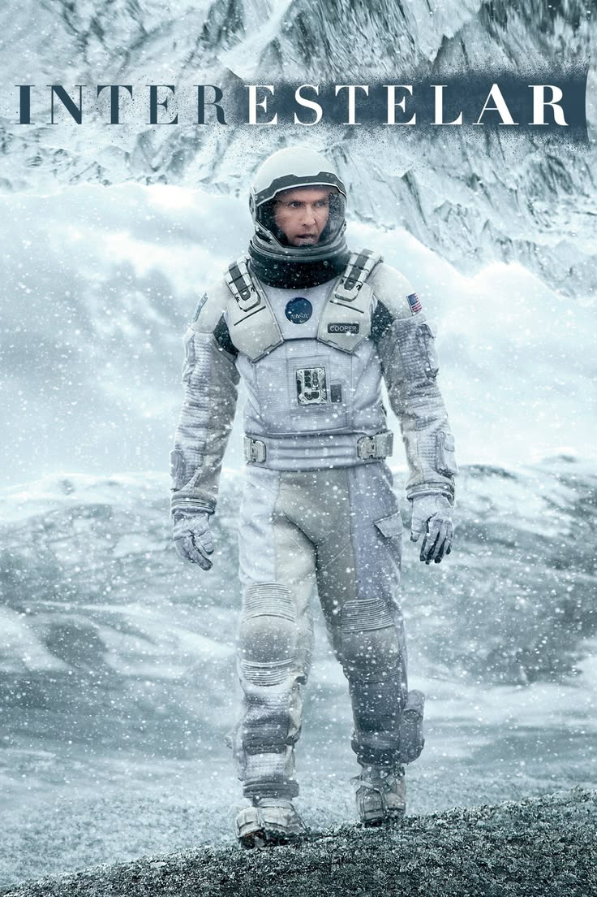

¡Más sobre mí!
Leonel Diaz
24 años | Santa Fé


Cualidades y Habilidades
- Mentalidad analítica
- Resolución de problemas
- Trabajo en equipo
- Atención al detalle
Leonel Diaz
24 años | Santa Fé
Películas Favoritas
